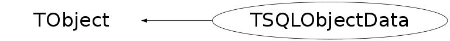

class TSQLObjectData: public TObject
TSQLObjectData is used in TBufferSQL2 class in reading procedure. It contains data, request from database table for one specifc object for one specific class. For instance, when data for class TH1 required, requests will be done to TH1_ver4 and TH1_raw4 tables and result of these requests will be kept in single TSQLObjectData instance.
Function Members (Methods)
public:
| TSQLObjectData() | |
| TSQLObjectData(const TSQLObjectData&) | |
| TSQLObjectData(TSQLClassInfo* sqlinfo, Long64_t objid, TSQLResult* classdata, TSQLRow* classrow, TSQLResult* blobdata, TSQLStatement* blobstmt) | |
| virtual | ~TSQLObjectData() |
| void | TObject::AbstractMethod(const char* method) const |
| void | AddUnpack(const char* tname, const char* value) |
| void | AddUnpackInt(const char* tname, Int_t value) |
| virtual void | TObject::AppendPad(Option_t* option = "") |
| virtual void | TObject::Browse(TBrowser* b) |
| static TClass* | Class() |
| virtual const char* | TObject::ClassName() const |
| virtual void | TObject::Clear(Option_t* = "") |
| virtual TObject* | TObject::Clone(const char* newname = "") const |
| virtual Int_t | TObject::Compare(const TObject* obj) const |
| virtual void | TObject::Copy(TObject& object) const |
| virtual void | TObject::Delete(Option_t* option = "")MENU |
| virtual Int_t | TObject::DistancetoPrimitive(Int_t px, Int_t py) |
| virtual void | TObject::Draw(Option_t* option = "") |
| virtual void | TObject::DrawClass() constMENU |
| virtual TObject* | TObject::DrawClone(Option_t* option = "") constMENU |
| virtual void | TObject::Dump() constMENU |
| virtual void | TObject::Error(const char* method, const char* msgfmt) const |
| virtual void | TObject::Execute(const char* method, const char* params, Int_t* error = 0) |
| virtual void | TObject::Execute(TMethod* method, TObjArray* params, Int_t* error = 0) |
| virtual void | TObject::ExecuteEvent(Int_t event, Int_t px, Int_t py) |
| virtual void | TObject::Fatal(const char* method, const char* msgfmt) const |
| virtual TObject* | TObject::FindObject(const char* name) const |
| virtual TObject* | TObject::FindObject(const TObject* obj) const |
| const char* | GetBlobPrefixName() const |
| const char* | GetBlobTypeName() const |
| virtual Option_t* | TObject::GetDrawOption() const |
| static Long_t | TObject::GetDtorOnly() |
| virtual const char* | TObject::GetIconName() const |
| TSQLClassInfo* | GetInfo() const |
| const char* | GetLocatedField() const |
| virtual const char* | TObject::GetName() const |
| virtual char* | TObject::GetObjectInfo(Int_t px, Int_t py) const |
| static Bool_t | TObject::GetObjectStat() |
| Long64_t | GetObjId() const |
| virtual Option_t* | TObject::GetOption() const |
| virtual const char* | TObject::GetTitle() const |
| virtual UInt_t | TObject::GetUniqueID() const |
| const char* | GetValue() const |
| virtual Bool_t | TObject::HandleTimer(TTimer* timer) |
| virtual ULong_t | TObject::Hash() const |
| virtual void | TObject::Info(const char* method, const char* msgfmt) const |
| virtual Bool_t | TObject::InheritsFrom(const char* classname) const |
| virtual Bool_t | TObject::InheritsFrom(const TClass* cl) const |
| virtual void | TObject::Inspect() constMENU |
| void | TObject::InvertBit(UInt_t f) |
| virtual TClass* | IsA() const |
| Bool_t | IsBlobData() const |
| virtual Bool_t | TObject::IsEqual(const TObject* obj) const |
| virtual Bool_t | TObject::IsFolder() const |
| Bool_t | TObject::IsOnHeap() const |
| virtual Bool_t | TObject::IsSortable() const |
| Bool_t | TObject::IsZombie() const |
| Bool_t | LocateColumn(const char* colname, Bool_t isblob = kFALSE) |
| virtual void | TObject::ls(Option_t* option = "") const |
| void | TObject::MayNotUse(const char* method) const |
| virtual Bool_t | TObject::Notify() |
| void | TObject::Obsolete(const char* method, const char* asOfVers, const char* removedFromVers) const |
| static void | TObject::operator delete(void* ptr) |
| static void | TObject::operator delete(void* ptr, void* vp) |
| static void | TObject::operator delete[](void* ptr) |
| static void | TObject::operator delete[](void* ptr, void* vp) |
| void* | TObject::operator new(size_t sz) |
| void* | TObject::operator new(size_t sz, void* vp) |
| void* | TObject::operator new[](size_t sz) |
| void* | TObject::operator new[](size_t sz, void* vp) |
| TObject& | TObject::operator=(const TObject& rhs) |
| virtual void | TObject::Paint(Option_t* option = "") |
| virtual void | TObject::Pop() |
| Bool_t | PrepareForRawData() |
| virtual void | TObject::Print(Option_t* option = "") const |
| virtual Int_t | TObject::Read(const char* name) |
| virtual void | TObject::RecursiveRemove(TObject* obj) |
| void | TObject::ResetBit(UInt_t f) |
| virtual void | TObject::SaveAs(const char* filename = "", Option_t* option = "") constMENU |
| virtual void | TObject::SavePrimitive(ostream& out, Option_t* option = "") |
| void | TObject::SetBit(UInt_t f) |
| void | TObject::SetBit(UInt_t f, Bool_t set) |
| virtual void | TObject::SetDrawOption(Option_t* option = "")MENU |
| static void | TObject::SetDtorOnly(void* obj) |
| static void | TObject::SetObjectStat(Bool_t stat) |
| virtual void | TObject::SetUniqueID(UInt_t uid) |
| void | ShiftToNextValue() |
| virtual void | ShowMembers(TMemberInspector& insp) |
| virtual void | Streamer(TBuffer& b) |
| void | StreamerNVirtual(TBuffer& b) |
| virtual void | TObject::SysError(const char* method, const char* msgfmt) const |
| Bool_t | TObject::TestBit(UInt_t f) const |
| Int_t | TObject::TestBits(UInt_t f) const |
| virtual void | TObject::UseCurrentStyle() |
| Bool_t | VerifyDataType(const char* tname, Bool_t errormsg = kTRUE) |
| virtual void | TObject::Warning(const char* method, const char* msgfmt) const |
| virtual Int_t | TObject::Write(const char* name = 0, Int_t option = 0, Int_t bufsize = 0) |
| virtual Int_t | TObject::Write(const char* name = 0, Int_t option = 0, Int_t bufsize = 0) const |
protected:
| virtual void | TObject::DoError(int level, const char* location, const char* fmt, va_list va) const |
| Bool_t | ExtractBlobValues() |
| const char* | GetClassFieldName(Int_t n) |
| Int_t | GetNumClassFields() |
| void | TObject::MakeZombie() |
| Bool_t | ShiftBlobRow() |
Data Members
public:
| enum TObject::EStatusBits { | kCanDelete | |
| kMustCleanup | ||
| kObjInCanvas | ||
| kIsReferenced | ||
| kHasUUID | ||
| kCannotPick | ||
| kNoContextMenu | ||
| kInvalidObject | ||
| }; | ||
| enum TObject::[unnamed] { | kIsOnHeap | |
| kNotDeleted | ||
| kZombie | ||
| kBitMask | ||
| kSingleKey | ||
| kOverwrite | ||
| kWriteDelete | ||
| }; |
protected:
| TSQLResult* | fBlobData | ! |
| const char* | fBlobPrefixName | ! name prefix in current blob row |
| TSQLRow* | fBlobRow | ! |
| TSQLStatement* | fBlobStmt | ! |
| const char* | fBlobTypeName | ! name type (without prefix) in current blob row |
| TSQLResult* | fClassData | ! |
| TSQLRow* | fClassRow | ! |
| Bool_t | fCurrentBlob | ! |
| TSQLClassInfo* | fInfo | ! |
| Int_t | fLocatedColumn | ! |
| const char* | fLocatedField | ! |
| const char* | fLocatedValue | ! |
| Long64_t | fObjId | ! |
| Bool_t | fOwner | ! |
| TObjArray* | fUnpack | ! |
Class Charts
{kind=link}
{kind=link}
{kind=link}
{kind=link}

Function documentation
TSQLObjectData(TSQLClassInfo* sqlinfo, Long64_t objid, TSQLResult* classdata, TSQLRow* classrow, TSQLResult* blobdata, TSQLStatement* blobstmt)
normal contrsuctor,
Bool_t LocateColumn(const char* colname, Bool_t isblob = kFALSE)
locate column of that name in results
void AddUnpack(const char* tname, const char* value)
add emulated data this used to place version or TObject raw data, read from normal tables
Bool_t VerifyDataType(const char* tname, Bool_t errormsg = kTRUE)
checks if data type corresponds to that stored in raw table